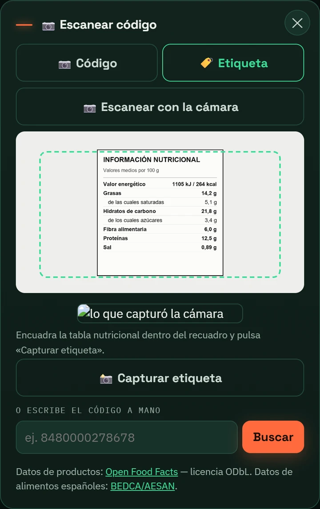
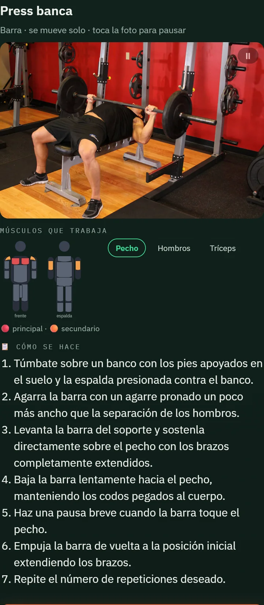
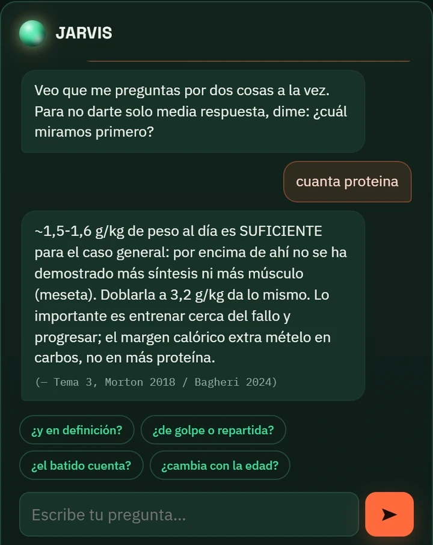

Qué hace
Herramientas de verdad, no promesas
Todo esto está construido y en uso. «Ver más» abre el detalle técnico.
Lee la etiqueta con la cámara
Apunta a la tabla nutricional y la app la lee: energía, macros, sal y azúcares. También escanea códigos de barras.
Ver más
Tesseract.js sobre un preprocesado de imagen propio: binarización adaptativa de Sauvola (umbral por ventana, para aguantar los brillos y sombras de una foto real de supermercado) y reconstrucción de las filas de la tabla por coordenadas. El escáner de códigos lee EAN-13/8, UPC, Code-128 y GS1 (QR y Data Matrix), y extrae el peso variable de la charcutería al corte cuando el código lo trae.

Te enseña dónde tiene que apretar
Instrucciones paso a paso y una ilustración que pinta en rojo el músculo principal y en naranja los secundarios. De un vistazo sabes qué estás trabajando.
Ver más

Pregunta y te cita la fuente
Responde tus dudas de entreno y nutrición citando de dónde sale cada respuesta. Si no lo sabe, lo dice.
Ver más
Morton 2018 / Bagheri 2024). Detecta preguntas ambiguas y desambigua antes de responder en vez de soltar media respuesta, y encadena preguntas de seguimiento.

Diario de comida sin cobertura
La base completa de alimentos de España viaja en el móvil y se consulta sin cobertura: en el metro, en el gimnasio, donde sea.
Lo que bebes, en un sitio
Los vasos de agua y los miligramos de cafeína del día, en la misma pestaña.
Calorías y macros que puedes creerte
El motor de cálculo pasa una revisión adversarial y 77 baterías de pruebas antes de cada publicación.
En números
Nada de esto es una maqueta
A medias
Lo que aún no está
Un producto real tiene obra abierta. Esta es la de hoy.
- Buscador de alimentos: con búsquedas de dos palabras («leche entera») el mejor resultado aún puede salir tarde en la lista.
- Base mundial de alimentos: construida y en verificación; aún sin publicar.
- Asistente: falta que aprenda de lo que no sabe responder y limpiar las sugerencias viejas.
Cómo lo construyo
Dirección técnica con IA agéntica
No es «la IA lo hizo sola». Yo fijo la arquitectura y dirijo la verificación; la responsabilidad es mía.
Especificación cerrada
Un pliego técnico con alcance, restricciones y criterios de aceptación.
Orquestación en paralelo
Varios agentes construyen a la vez contra ese pliego.
Verificación adversarial
Otros agentes objetan cada cambio: su trabajo es encontrar el fallo.
Puerta de calidad
77 baterías de pruebas y un escaneo de secretos. Si algo falla, no sale.
Publicación y versionado
Versionado real y changelog. Decenas de versiones desplegadas.
Ver más
node --check y escaneo de secretos como paso independiente— y el trabajo externo entra por pull request revisada.